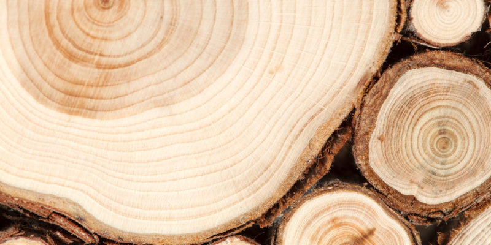

San Martin depende de sus actividades económicas para que así el estado gane dinero y su población pueda subsistir, algunas de estas son:
| Factor |
Descripción |
| Agricultura |
En estos últimos tiempos se ha ido integrando mayor tecnología a la explotación de la tierra,(utilizando fertilizantes y pesticidas, que hizo que se recuperen extensas áreas agrícolas), esto para que haya una mejor calidad en las cosechas. Los productos que se cultivan principalmente son maiz amarillo duro,plátano , arroz , yuca y algodón, por otra parte, los productos permanentes (es decir los que si o si ocupan areas agricolas) son el café , palma aceitera , cacao y coca .
|
| Ganaderia |
En esta actividad, san martín se caracteriza por ser extensiva y tradicional, en otras palabras, usa extensiones con pasturas naturales de baja calidad nutritiva, generalmente sin separación de potreros y bajo el sistema de pastoreo continúo. Hay que mencionar que el ganado vacuno es el pilar para la producción de carne, donde hay diferentes tipos de mestizaje como el Bos Indicus, generalmente llamado Cebú de la raza Brahman,etc.
|
| Comercio |
Este sector es el responsable de los movimientos económicos de la región.En san martin gracias a la abundante produccion de arroz, maíz amarillo, algodón, café, soya, tabaco, maderas, etc, estos se envian a la costa, donde ademas de los pobladores de la costa son beneficiados por obtener esto, san martin obtiene ganancias con la exportacion de estos productos, un dato a agregar es que la actividad commercial de la region se concentra en su capital (Moyobamba),tarapoto y Nueva Cajamarca y por el sur, las provincias de Tocache, Bellavista y Juanjuí.
|
Lugares turisticos
El castillo de Lamas
Esta atracción se encuentra a media hora de Tarapoto, en Lamas, el centro económico de San Martín. El castillo de Lamas fue construido por Nicola Felice, en el año 2005, un empresario italiano, desde que era pequeño quería vivir en un castillo medieval, por ello fue a Perú y específicamente al pueblo de Lamas en San Martín, ya que le pareció una gran idea construir un castillo en medio de la selva. Para lograr su objetivo, usó unas piedras y aprovechando un monte no muy elevado, desde donde se podía ver la mayoría del pueblo de Lamas, lo construyó, cabe resaltar que lo realizó con ayuda de las personas de ese pueblo. Al inicio, Nicola Felice quería utilizar el castillo como vivienda para él y su familia, sin embargo, unos años después, decidió establecer su castillo medieval como centro turístico de San Martín con el fin de apoyar a la economía local. El castillo de Lamas tiene 5 pisos, sin embargo algunos cuartos se encuentran inhabilitados por el momento. En el primer piso se pueden encontrar pinturas medievales y renacentistas de famosos artistas de esas épocas.
Catarata ahuashiyacu
Se encuentra a unos minutos de Tarapoto, el centro económico de San Martín. Su nombre proviene del quechua, significa “agua cantarina” y esto demuestra la influencia de algunas andinas en la amazonía del Perú. Esta catarata tiene 40 metros de altura y se pueden apreciar varias especies de orquídeas, mariposas y el gallito de las rocas, aunque las apariciones de animales en este lugar cada vez son más raras debido a la presencia de los humanos en zonas cercanas a este lugar. En esta catarata se puede nadar o bucear, sin embargo hay una zona donde la profundidad puede llegar a 10 metros aproximadamente, por ello se colocó una soga para facilitar su acceso.
Centro turístico Tio Yacu
Este lugar turístico se encuentra en la provincia de Rioja, cerca de Moyobamba. Se caracteriza por poseer un río como principal atractivo turístico, sus aguas emergen del subsuelo. Dentro de ese lugar se realizan actividades recreativas como escalar los montes cercanos o bañarse en el rio. Aparte del rio también se encuentran pequeñas lagunas a medida que los turistas exploran el lugar.
Baños termales de San Mateo
Son un centro recreacional donde los turistas pueden bañarse en aguas termales con el fin de calmar algunas dolencias que poseen. Este lugar cuenta con varias pozas que poseen agua a distintas temperaturas, desde 30 grados hasta 50 grados, se recomienda que los visitantes visiten las pozas más frías y luego las más calientes para acostumbrarse.
Laguna de Sauce
Es una laguna que se ubica en la provincia de Rioja. Para llegar a la laguna de Sauce, más conocida como la “Laguna Azul” se necesita pasar en una plataforma que flota, para cruzar el río Huallaga. Alrededor de la laguna de Sauce viven varias comunidades nativas que hacen degustar sus productos a los turistas, la única forma de visitar a estas comunidades es con bote, debido a que no hay un camino señalizado para bordear el lago. Al final de la laguna de Sauce se encuentra una zona donde realizan deportes acuáticos extremos, en grupos e individuales que ayudan a mejorar la economía local gracias al turismo. Algunos de estos son subirse a un inflable que es jalado por una lancha a gran velocidad por el lago.
Gobierno regional (pasa el cursor sobre la imagen para ver el texto)
El gobierno regional de San Martín tiene un rol fundamental en la regulación económica, y principalmente se enfocan en la sostenibilidad ambiental, ya que los recursos naturales de la región son muy valiosos para la producción de sus productos.
Sin embargo, hay un problema en el que el gobierno regional de San Martín ha implementado medidas para luchar contra esto, este es el tráfico Ilegal de productos forestales maderables y no maderables.
Esto resulta en un gran problema para la economía de san martín ya que sin los recursos maderables (madera,cedro,caoba,etc) y no maderables (flores,frutos,etc),la producción de los productos, tales como plantas medicinales,tés,etc sería nula o muy escasa, por otra parte, la exportación a otras regiones también se vería afectada y por lo tanto la ganancia económica también.
Es por ello que el gobierno de san martín implementó medidas tales como; la participación del Módulo de Control del Sistema Nacional de Información Forestal y Fauna Silvestre (SNIFFS), que incluye la implementación del registro y control de guías de transporte forestal, además de protocolos y monitoreo de actos administrativos otorgados en materia forestal y fauna silvestre.
Con todo esto, la finalidad es de que los recursos maderables y no maderables estén en estado óptimo,protegidos y no sean mal usados,además que con esto se garantiza un crecimiento en la producción de productos y por consiguiente un aumento en la economía de la región(por las exportaciones que se harían con los productos).
Rol del estado para garantizar el desarrollo del mercado y comercio regional
Cacao
San Martin es famoso alrededor del mundo por la producción de cacao de buena calidad. Los agricultores locales cultivan cacao en las tierras fértiles de la región. Después de la cosecha, los granos de cacao se procesan para producir cacao en grano o se transforman en deliciosos productos como el chocolate. Esta producción contribuye significativamente a la economía regional.
Cafe
En San Martín se produce café. El clima y el suelo de la región son buenos para el cultivo de este. Los agricultores cuidan los cafetales y cosechan los granos de café, que luego se procesan y se exportan a diferentes partes del mundo.
Madera
La región de San Martín cuenta con extensos bosques tropicales que son una fuente importante de madera. La tala controlada de árboles proporciona madera para diversas aplicaciones, como la construcción, la fabricación de muebles y la artesanía local.

Destino de la produccion local
Algunos productos como las frutas, los mariscos y los productos lácteos, son consumidos por las comunidades o personas. Sin embargo, otros productos como el cacao y el café se exportan a otros países trayendo consigo ganancias económicas para los fabricantes. Al igual que estos productos, la madera que produce San Martín, se exporta hacia el extranjero por su calidad.

Rol del estado en el comercio de San Martin
El estado propone varias estrategias para mejorar la situación económica en San Martín, se enfoca en el comercio, entre ellas se encuentran: Invertir en infraestructura, como puentes, carreteras, pistas y puertos, promover la inversión privada que de trabajo a las comunidades locales, desarrollo del turismo para que los pobladores puedan obtener algunas ganancias, mejora de la educación para que la población cree nuevas actividades económicas en base a sus recursos y protección del medio ambiente para que estas mejoras se mantengan varios años.